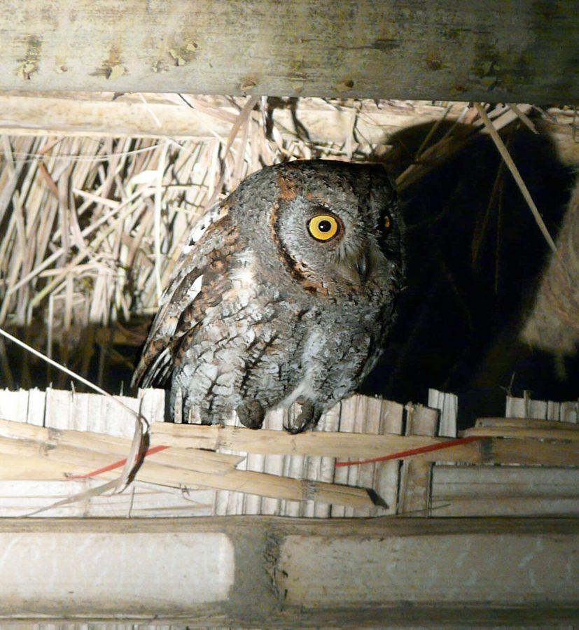

ओरिएंटल स्कोप्स उल्लूOriental Scops Owl
Otus sunia · Strigidae · BRD-0325

- Scientific name वैज्ञानिक नाम
- Otus sunia (Hodgson, 1836)
- Family कुल
- Strigidae
- Hindi हिंदी
- ओरिएंटल स्कोप्स उल्लू
- Local names स्थानीय नाम
- ghoghad kusial, sunya kusial, oriental scops owl, asian scops owl
- Status here यहाँ की स्थिति
- native
- Movement आवागमन
- Resident, here all year
- Known from कहाँ दर्ज
- Others have published records from the wider Awadh–Purvanchal plain, none yet from Basti–Ayodhya अवध–पूर्वांचल से दूसरों के प्रकाशित अभिलेख, बस्ती–अयोध्या से अभी नहीं
- IUCN IUCN
- LC
- Review समीक्षा
- not yet reviewed
When to look कब देखें
Present all year. साल भर मौजूद।
Tell it apart from इनसे अलग पहचानें
ओरिएंटल स्कोप्स उल्लू / Oriental Scops Owl
Otus sunia (Hodgson, 1836) — Strigidae
ओरिएंटल स्कोप्स उल्लू — तराई और मैदानी जंगलों में रहने वाला एक अत्यंत छोटा, निशाचर और छलावरण में माहिर उल्लू है। दिन के समय यह पेड़ों के तनों से चिपककर या खोखलों में इस तरह छिपता है कि पेड़ की सूखी छाल जैसा ही प्रतीत होता है। इसके सिर पर दो छोटे कान जैसे पंखों के गुच्छे (टफ्ट्स) होते हैं और आंखें चमकदार पीली होती हैं। रात होते ही यह सक्रिय होकर 'टुक-टुक-टुक' या 'कुरु-कुक' जैसी एकरस गूंजती आवाज निकालता है और पेड़ों पर घूमने वाले कीड़ों तथा टिड्डों का शिकार करता है।
Quick Identification त्वरित पहचान
| Feature | Description | |
|---|---|---|
| Habit | Small, strictly nocturnal, cavity-roosting owlet of woodlands and groves | |
| Size | Diminutive, compact body roughly the size of a [[common_myna\ | Common Myna]] |
| Plumage | Highly polymorphic; finely vermiculated grey-brown to bright chestnut-rufous | |
| Ear Tufts | Small, erectile, feather ear tufts held upright when alert | |
| Facial Disc | Pale greyish or rufous disc neatly framed by a dark lateral border | |
| Eyes | Brilliant, glowing lemon-yellow to golden-yellow irises | |
| Call | Monotonous, hollow, frog-like or bell-like popping whistle repeated at regular intervals |
Field tip: Listen after dusk for a rhythmic, resonant hollow whistle echoing from village orchards or sal edges. By day, scan old tree trunks for a stiff, elongated bark-like silhouette with raised ear tufts.
हिंदी:
यह मैना के आकार का एक नन्हा उल्लू है जिसके सिर पर छोटे कान जैसे पंख होते हैं।
इसकी आंखें चमकीली पीली होती हैं और शरीर पर छाल जैसी बारीक धारियां होती हैं।
यह रात में लगातार सीटी जैसी मधुर और गूंजने वाली आवाज निकालता है।
Morphology आकारिकी
Measurements as given by Baker (1927):
| Measurement | Range |
|---|---|
| Wing | Wing 137 to 154 mm. (Baker 1927 as Otus sunia) |
The Oriental Scops Owl is a small strigid exhibiting pronounced plumage polymorphism, with individuals ranging from a finely vermiculated grey phase to an intensely saturated chestnut-rufous morph. The head is broad, topped with distinct, erectile feather ear tufts that can be flattened at will.
The facial disc is pale buff or greyish, edged along the sides by an irregular blackish line. The scapulars bear a prominent longitudinal row of creamy-white or pale buff spots on their outer webs, forming a conspicuous light stripe along each shoulder when perched.
The upperparts are exquisitely vermiculated with zigzag dark lines, spots, and dusky shaft-streaks. The breast and belly feature fine cross-barring intermixed with black drop-like shaft-lines. The bill is greenish-horny, tipped with blackish. The tarsi are feathered down to the bases of the toes, which are bare and fleshy-grey.
Vocalisations. The territorial call is a distinctive, rhythmic, hollow whistle, phonetically transcribed as tuk-tok-torok or wuk-chug-chug, delivered persistently from a concealed high branch throughout the night.
हिंदी:
इसके पंखों का फैलाव 137 से 154 मिमी तक होता है।
इसका शरीर भूरा या कत्थई होता है जिस पर पेड़ की छाल जैसी बारीक आड़ी-तिरछी रेखाएं बनी होती हैं।
इसके पैरों के पंजों का ऊपरी हिस्सा बारीक पंखों से ढका रहता है।
Behaviour & Ecology व्यवहार और पारिस्थितिकी
Otus sunia spends the daylight hours roosting motionless against a lichen-encrusted tree trunk, nestled within an upright fork, or tucked inside a hollow trunk. When alarmed by passing humans or mobbing songbirds, it adopts an extraordinary camouflage posture, freezing vertically, closing its eyes to narrow slits, and compressing its feathers to resemble a dead, broken branch stump.
Activity commences shortly after sundown. The owl hunts primarily by scanning from a low perch, dropping silently onto the ground or seizing flying prey from foliage using its sharp, curved talons. It is territorial, with pairs maintaining calling duets during the breeding season.
हिंदी:
दिन के समय यह पेड़ के तने से सटकर अपनी आंखें बंद करके बिल्कुल लकड़ी के ठूंठ की तरह जम जाता है।
रात होते ही यह अपने ठिकाने से बाहर निकलकर डालियों पर बैठकर शिकार की ताक में रहता है।
Life Cycle / Phenology जीवन चक्र
In northern India and the lower Himalayas, breeding occurs early in the year during February and March, with fully fledged young observed in April (Baker 1927, p. 436). Courtship involves persistent nocturnal vocal calls.
The species does not build a nest, depositing its eggs in natural tree hollows or crevices in old masonry walls. A small clutch of rounded white eggs is laid and incubated for a few weeks while the female is provisioned by the male. Both adults brood the owlets until they fledge.
हिंदी:
उत्तरी भारत और निचली हिमालयी पहाड़ियों में यह फरवरी और मार्च में अंडे देता है और अप्रैल तक बच्चे उड़ने योग्य हो जाते हैं (बेकर 1927)।
यह पेड़ के पुराने खोखलों या पुरानी दीवारों के सुराखों में अंडे देता है।
कुछ सप्ताह अंडे सेने के बाद बच्चे निकलते हैं जिनकी देखभाल नर और मादा दोनों मिलकर करते हैं।
Host Plants or Prey आहार
The Oriental Scops Owl is a versatile nocturnal predator consuming a wide array of insects and small animals:
- Large night-flying insects including hawkmoths, noctuid moths, and beetles
- Orthopterans including bush crickets, mole crickets, and praying mantises
- Ground invertebrates such as centipedes, scorpions, and large spiders
हिंदी:
इसका मुख्य आहार रात में उड़ने वाले पतंगे, झींगुर, गोबरैले, बिच्छू और मकड़ियां हैं।
Predators / Natural Enemies शत्रु व परभक्षी
Larger raptors, owls, and small carnivores take birds of this size. No source opened for this atlas names a specific predator of this bird.
हिंदी:
बड़े शिकारी पक्षी, उल्लू और छोटे मांसाहारी इस आकार के पक्षियों का शिकार करते हैं। इस एटलस के लिए खोले गए किसी स्रोत में इस पक्षी के किसी विशिष्ट शिकारी का नाम नहीं है।
Agricultural / Human Relevance कृषि व मानव संदर्भ
The Oriental Scops Owl is an insectivore feeding on nocturnal insects and small invertebrates (Baker 1927, p. 436). It is protected under the Wildlife (Protection) Act, 1972.
हिंदी:
ओरिएंटल स्कोप्स आउल रात में सक्रिय रहने वाले कीट-पतंगों और छोटे अकशेरुकी जीवों को खाता है (बेकर 1927)। यह वन्यजीव (संरक्षण) अधिनियम, 1972 के तहत संरक्षित है।
Expected Locally स्थानीय रूप से अपेक्षित
Not a field record. Written from published accounts for eastern Uttar Pradesh. No confirmed local sighting yet — if you have seen it, that is what the atlas needs.
अभी तक स्थानीय पुष्टि नहीं। यह विवरण प्रकाशित स्रोतों से है, किसी अवलोकन से नहीं।
Search along mature sal woodland edges, old mango topes, and wooded village ravines of the Terai.
GBIF holds published records from the wider Awadh–Purvanchal plain, none yet from Basti–Ayodhya.
A first record would be a photograph of the bird or an audio recording of its territorial whistle with place and date, sent through the About page.
Distribution वितरण
Global and historical range: Native across eastern, southern, and southeastern Asia, from Pakistan and the western Himalayas eastward across India, Nepal, Bhutan, Bangladesh, China, Russia, Korea, Japan, and Southeast Asia.
Regional status: Resident and seasonal woodland breeder in the Terai sal forests and adjacent foothill tracts of northern Uttar Pradesh, including Dudhwa and Katarniaghat.
हिंदी:
यह रूस और जापान से लेकर पूरे भारत, नेपाल और दक्षिण-पूर्व एशिया के जंगलों में फैला हुआ है।
उत्तर प्रदेश में यह तराई के घने जंगलों और पुराने बागों में पाया जाता है।
Research Questions शोध प्रश्न
- How do ambient moonlight conditions influence nocturnal calling rates and foraging sally success in Otus sunia? / चांदनी रात और अंधेरी रात में ओरिएंटल स्कोप्स उल्लू के बोलने और शिकार करने की दर में क्या बदलाव आता है?
- What are the tree cavity dimensions and entrance orientations preferred by nesting pairs in old-growth sal versus village orchards? / साल के वनों और पुराने बगीचों में घोंसला बनाने के लिए यह उल्लू किस प्रकार के खोखलों को प्राथमिकता देता है?
- What is the ratio of rufous to grey morph individuals across the northern Uttar Pradesh Terai population?
- How does nocturnal agricultural pesticide spraying affect owl prey availability and fledgling survival?
- Can automated acoustic monitoring stations reliably census breeding territory densities across fragmented forest blocks?
Similar Species मिलती-जुलती प्रजातियाँ
| Species | How to tell apart | हिंदी | |
|---|---|---|---|
| [[indian_scops_owl\ | Indian Scops Owl]] (Otus bakkamoena) | Larger and greyer, with a pale collar on the hind neck and a soft single-note call, not the Oriental's frog-like phrase | छोटा उल्लू |
| [[jungle_owlet\ | Jungle Owlet]] (Glaucidium radiatum) | No ear tufts; round head and upperparts closely barred with brown; often calls by day | जंगली उल्लू |
Field rule: The diminutive myna-sized build, prominent erectile ear tufts, bright lemon-yellow eyes, and monotonous frog-like whistling call distinguish the Oriental Scops Owl.
हिंदी:
छोटा आकार, सिर पर दो कान जैसे पंख, चमकीली पीली आंखें और लगातार गूंजने वाली सीटी जैसी बोली इसकी खास पहचान हैं।
Taxonomy & Classification वर्गीकरण
Original description. Described by Brian Houghton Hodgson in 1836 in Asiatic Researches (vol. 19, p. 175), under the basionym Scops sunia.
Synonyms and historical names. Stuart Baker (1927, p. 435) treated the taxon under Otus sunia, noting the vernacular names "Ghoghad Kusial" and "Sunya Kusial" in Nepal.
Subspecies. Multiple subspecies are recognized across Asia; northern Indian populations represent the nominate subspecies Otus sunia sunia (Hodgson, 1836).
Family and order placement. Order Strigiformes (owls); family Strigidae (typical owls); genus Otus.
IUCN status rationale. Evaluated as Least Concern (LC) on the IUCN Red List because of its vast range, adaptability to altered wooded landscapes, and large global population.
हिंदी:
हॉजसन ने 1836 में इसका वर्णन किया था। यह स्ट्रिगिडी (उल्लू) कुल का सदस्य है और संकटमुक्त (LC) है।
Photo Gallery फोटो गैलरी
No photos yet — add field photos to media/species/oriental_scops_owl/ and run node scripts/sync_photos.js.
Photos needed आवश्यक फोटो
- [ ] Individual roosting against bark showing cryptic camouflage (पेड़ की छाल से सटा छिपता उल्लू)
- [ ] Bird calling at dusk with erected ear tufts (शाम के समय कान के पंख उठाए बोलता उल्लू)
References संदर्भ
- Hodgson, B. H. (1836). Asiatic Researches, vol. 19, pt. 1, p. 175 (as Scops sunia).
- Baker, E. C. S. (1927). The Fauna of British India, Including Ceylon and Burma. Birds. Vol. 4. Taylor & Francis, London, p. 435 (as Otus sunia).
- Ali, S. & Ripley, S. D. (1987). Compact Handbook of the Birds of India and Pakistan. Oxford University Press, New Delhi.
- BirdLife International (2016). Otus sunia. The IUCN Red List of Threatened Species 2016: e.T22728969A95001928.
- Wildlife (Protection) Act, 1972 (as amended in 2022). Government of India, Schedule I.
- GBIF Occurrence Data — Otus sunia (Hodgson, 1836), India (2025).
Source file: species/fauna/birds/oriental_scops_owl.md